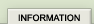
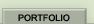
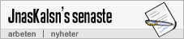
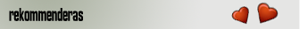
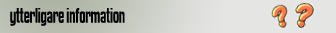

Hejsan.
Det du ser framför dig är en personlig sida där jag visar en del arbeten jag gjort. Sedan år 2000 har jag programmerat HTML och CSS och på senare år har jag även börjat arbeta med Flash MX. För tillfället sker det mesta grafiska arbete utanför mina studier.
Jag studerar Informationsteknik och kommunikation på högskolan i Kalmar.

Juni - 2004.
Sidan lanseras.
Maj - 2004.
Carl Johansson. Tävlar i motorcross.
April - 2004.
Memory. Labbuppgift i skolan.
Sidan lanseras.
Maj - 2004.
Carl Johansson. Tävlar i motorcross.
April - 2004.
Memory. Labbuppgift i skolan.

Sidan är speciellt anpassad för just Mozilla Firefox, utmärkt webbläsare.
Ladda hem >>
Ladda hem >>

Copyright © 2004 Jonas Karlsson. Alla rättigheter reserverade.